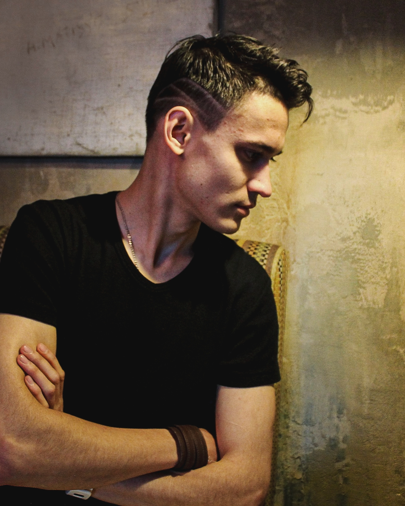

Денис Хрисанфов
Junior+ Frontend Developer
Являюсь джуниор Web разработчиком, пишу на чистом JavaScript , знаю основы HTML и CSS.
Владею такими фраимворками, как:
- React
- Angular
- Vue
- Meteor
- Node.js
- React Native
- Cordova
Своими силами разработал два Full-stack проекта, в результате которых были написанны приложения для Web и Mobile.
Понимаю принцыпы UX/UI дизайна и Machine learning.
Люблю путешестовавать, заниматься спортом, кататься на сноуборде и ходить в пешие походы.
Но програмировать люблю больше =)
Список социальных сетей:
Telegram
|
Вконтакте